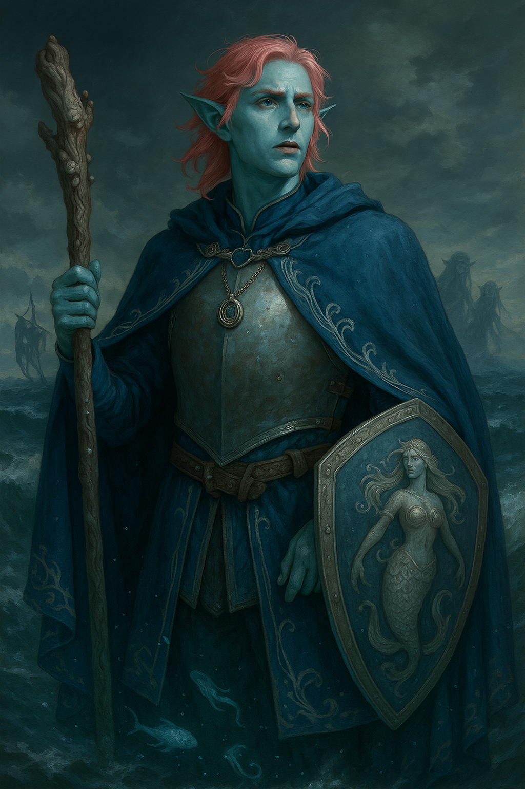

Simeon Blackreef¶

"“A Blackreef finishes what he starts. Preferably in style. Why are you all laughing?”"
Character Overview¶
| Class & Level | Druid (Circle of the Sea) 4 |
| Background | Noble |
| Race | Sea Elf |
| Alignment | Lawful Neutral |
| Role | Control and utility caster; resilient skirmisher with sea-themed tricks |
A vain but newly humbled sea-elf noble who channels the ocean’s fury. Simeon dresses like a prince, reasons like a brat, showers his friends with affection and wrestles with whether his legacy is curse or compass.
Personality¶
- Haughty exterior over a secretly gentle heart; expects deference, needs a hug
- Wants to do right but clings to status; prone to theatrical complaints and fashion advice
- Loyal to companions, merciless to mockery; learns slowly to see beyond class
- Torn between the hags’ blood legacy and his father’s name; refuses to be anyone’s pawn again
- The most likely party member to spend his entire share of the loot on giving the Barbarian a makeover
PDF Character Sheet¶
📄 Download full character sheet
Gameplay Notes¶
Playing Simeon Blackreef effectively
- Lean into contrasts: Present yourself with aristocratic poise, but let the cracks show when Simeon’s pride collides with genuine kindness. He scolds allies even as he saves them, which makes his loyalty shine all the brighter.
- Sell the sea: Work Simeon’s aquatic features (swim speed, Friend of the Sea) into the fiction—describe how he moves like water itself or speaks to sea beasts in tense moments.
- Make Wild Shape dramatic, not casual: Simeon despises the act, so treat every transformation as a reluctant sacrifice or a theatrical display, demanding recognition from allies afterwards.
DM Guidance
- Test his vanity: Put Simeon in situations where his noble pride is useless or mocked. Force him to choose between dignity and doing what’s right.
- Use his enemies as mirrors: Pirate Lord Barnaky Bales and his sea-hag mother both embody twisted legacies. Bring them back to tempt, taunt, or redefine Simeon’s sense of self.
- Reward humility: When Simeon swallows his pride or chooses compassion over status, let it matter—NPC respect, story breakthroughs, or even magical resonance with his druidic gifts.
Stat Snapshot¶
STR [8] ([-1]) DEX [12] ([+1]) CON [14] ([+2])
INT [10] ([+0]) WIS [18] ([+4]) CHA [14] ([+2])
HP [31] AC [19] Speed [30 ft], swimming Speed [30 ft]
Proficiency Bonus [+2]
Spell Save DC [14] Spell Attack [+6]
Wild Shape and Simeon¶
Simeon despises wild shaping and will make a deal of it.
Wild Shape: Simeon’s preferred forms
Use Wild Shape as a dramatic tool, not a default combat mode. These are the “fine, but admire me while I suffer” options.
| Form | Why He’d Choose It | His Commentary |
|---|---|---|
| Reef Shark | Fast swimmer, solid damage, thematic “Sea Prince” vibe | “Fine. But you’ll notice, sharks can’t talk. Which means I can’t tell you how much you owe me for this.” |
| Giant Octopus | Excellent grapple, stealth, underwater dominance | “Oh splendid, eight limbs to get tangled in kelp. Someone hold my cloak.” |
| Giant Owl | Night scouting, surprise swoop attacks | “Look at me, flapping about like a common barnyard pest. At least my plumage is better than theirs.” |
| Giant Sea Turtle | Defensive wall, protects allies while repositioning | “If I’m going to be slow, I insist on being majestic. Stand behind me; it’s the only view worth having.” |
| Dolphin (ask DM) | High-speed aquatic transport for allies | “Cling tightly and do not muss my dorsal fin.” |
| Warhorse | Land charge, speed, battlefield control | “Yes, I am aware you’re riding me. Don’t enjoy it too much.” |
Wild Shape: forms he loathes (roleplay fuel)
When he picks these, make it a choice with narrative teeth: pride vs. practicality.
| Form | Why He Avoids It | Grumble |
|---|---|---|
| Brown Bear | Land-based, “peasant animal” | “Ugh. My fur smells like forest. Keep them away from my face.” |
| Wolf | Pack-animal imagery he finds undignified | “I’m not howling. Not for you, not for anyone.” |
| Ape | Too on-the-nose brute force | “Really? A monkey? This is how far we’ve fallen.” |
| Boar | Mud. Everywhere. | “You all owe me a bath. Individually.” |